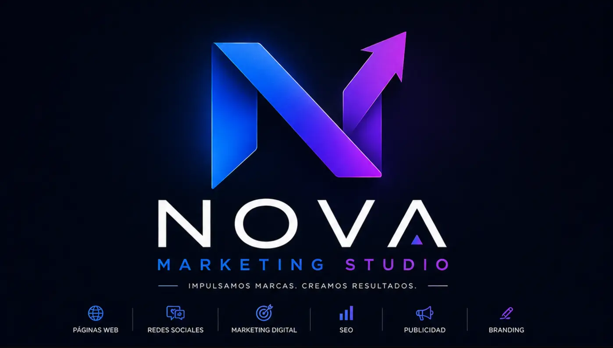

01
Websites
Schnelle, professionelle und mobiloptimierte Websites, die präsentieren, verkaufen und Kontakte gewinnen.
- Individuelles Design
- Kataloge und Landingpages
- WhatsApp, Formulare und SEO

Kreativ- und Digitalagentur · Costa Rica
Wir schaffen digitale Erlebnisse, die Strategie, Design und Technologie verbinden und Aufmerksamkeit in echte Chancen verwandeln.
Was wir tun
Wir verbinden alle Elemente Ihrer digitalen Präsenz, damit Ihr Unternehmen professionell wirkt, Vertrauen schafft und einen klaren Wachstumspfad verfolgt.
Schnelle, professionelle und mobiloptimierte Websites, die präsentieren, verkaufen und Kontakte gewinnen.
Strategische Inhalte für Instagram, Facebook und LinkedIn, die eine Community aufbauen und Ihre Marke aktiv halten.
Kampagnen, die Interessenten gewinnen, Ergebnisse messen und jede Investition optimal nutzen.
Visuelle Identitäten, Präsentationen und Materialien, die Ihr Unternehmen stark und unverwechselbar machen.
Wir optimieren Struktur und Inhalte, damit Kunden Sie finden, wenn sie nach Ihrem Angebot suchen.
Reels, visuelle Konzepte und kreative Produktion für mehr Inhalte ohne Qualitätsverlust.
Content in Bewegung
Wir verwandeln Ideen, Produkte und Dienstleistungen in vertikale Videos, die schnell Aufmerksamkeit gewinnen, klar kommunizieren und Ihre Marke aktiv halten.
Konzept, Schnitt, Musik, Stimme, Untertitel und Anpassung für jede Plattform.
Dynamische Inhalte, um Produkte zu präsentieren, zu informieren, zu werben und Ihre Community zu stärken.
Dynamische Beiträge, die Reichweite erhöhen, Interesse wecken und neue Menschen zu Ihrer Marke führen.
Werbevideos und filmische Konzepte, die traditionell nur schwer umzusetzen wären.
Produktionsauswahl
Eine Auswahl an Arbeiten für Marken, Produkte und Kampagnen. Aktivieren Sie den Ton für das vollständige Erlebnis.
Markenpräsentation mit technologischer und filmischer Ästhetik.
Eine Umweltidee in einem direkten, einprägsamen Hochformat.
Atmosphäre, Produkt und Emotion vermitteln ein Premium-Erlebnis.
Frischer Content für Bekanntheit und Gesprächswert.
Ausdrucksstarke Visuals, die Innovation erklären und Ideen verbinden.
Eine visuelle Erzählung aus Nostalgie, Bewegung und Persönlichkeit.
Eine mit KI erstellte Figur, die die Marke auf humorvolle Weise mit der Saison verbindet.
Haben Sie eine Idee oder ein Produkt, das so präsentiert werden sollte?
Lassen Sie uns Ihr nächstes Video erstellen ↗YouTube-Kanäle
Wir entwickeln skalierbare Content-Systeme: Strategie, Skripte, Produktion, Veröffentlichung und Optimierung für Shorts und lange Videos.
Unser Fußballkanal dient als kreatives Labor, um Formate, Erzählweisen, Trends und Wachstumsstrategien mit regelmäßigem Content zu testen.
Vertikale Ideen mit starkem Einstieg, Tempo, Untertiteln und Schnitt, um neue Zielgruppen zu erreichen.
Skripte, Erzählung und visuelle Struktur für tiefgehende Themen und anhaltende Aufmerksamkeit.
Produktion ohne Kameraauftritt, mit Stimme, Bildern, Schnitt und einer wiedererkennbaren Identität.
Thumbnails, SEO, Redaktionsplan, Veröffentlichung, Analyse und laufende Optimierung für das Wachstum jedes Kanals.
Echte Beispiele, die informieren, Gespräche anregen und eine Community rund um die Leidenschaft für Fußball aufbauen.
Kanal auf YouTube ansehen ↗Argentinien besiegt die Schweiz und erreicht das Halbfinale.
La Albiceleste sichert sich den Einzug ins Finale.
Argentinien gegen England bei der WM 2026.
Die Prognose für das große WM-Finale.
Unser Ansatz
Wir verstehen Ihr Unternehmen, Ihre Kunden und Ziele, bevor wir gestalten.
Wir verwandeln Strategie in ein stimmiges visuelles Erlebnis.
Wir liefern jedes Element fertig, funktional und mit Ihren Kanälen verbunden.
Wir messen, lernen und optimieren für weiteres Wachstum.
Ausgewählte Arbeiten
Ein gutes Projekt endet nicht, wenn es gut aussieht, sondern wenn es dem Kunden den nächsten Schritt erleichtert.
Wir haben ein breites Industriesortiment in ein klares, leicht zugängliches Erlebnis mit Datenblättern, Marken, Videos und direktem WhatsApp-Kontakt verwandelt.
Wir entwickelten eine elegante, leicht navigierbare digitale Präsenz für Location, Feiern, Galerie und Pakete mit direkter Reservierung über WhatsApp.
Wir haben ein langsames WordPress durch eine schnelle, moderne Website für ein Industrieunternehmen ersetzt: Kältetechnik, Ersatzteile, Sonderanfertigungen und technischer Support rund um die Uhr, mit direktem WhatsApp-Kontakt.
Wir haben das digitale Schaufenster eines Schönheitssalons gestaltet: Leistungskatalog, Online-Buchungen mit Bestätigung per WhatsApp, Produktverkauf und Geschenkgutscheine.
Lösungen für Ihren nächsten Schritt
Für Unternehmen, die professionell auftreten und Kontakt erleichtern möchten.
Für Unternehmen, die kontinuierlich und stimmig kommunizieren möchten.
Für Marken, die Web, Content und Akquisekampagnen verbinden möchten.
Sprechen wir über Ihren nächsten Schritt
Sagen Sie uns, was Sie erreichen möchten. Wir machen daraus einen klaren, professionellen und umsetzbaren Vorschlag.
Über WhatsApp schreiben ↗